A clear, cheerful, English-only study app for the full Tableau course. No timestamps, just concepts, examples, warnings, sample chart and file images, emojis, takeaways, and quiz practice.
Use this app as a cheerful study partner: read the concept, look at the example, notice the warning, then remember the takeaway.
🧪Mini Example
When you read about filters, imagine a manager asking to see only 2024 sales for Technology products.
✅Takeaway
Tableau is not only drag and drop. It is asking good questions, preparing the right data, choosing the right chart, and making answers easy to see.
Search for a topic when you need quick review.
Use the sidebar to jump between lessons.
Open quiz answers only after trying first.
Use the chart gallery when you need to choose a visual.
🧭Foundation
Course Roadmap
💡Big Picture
The course moves from data basics to Tableau products, architecture, data modeling, metadata, filters, parameters, actions, calculations, charts, dashboards, and a final project.
🔁Learning Flow
Understand BI, prepare the Tableau environment, build reliable data sources, create charts, combine them into dashboards, and deliver a project.
🧪Business Example
If a sales manager asks why revenue dropped, your workflow is: clarify the question, find the data, calculate the metric, choose a chart, then design the dashboard.
✅Takeaway
The course follows the same path as a real Tableau project.
🌊Foundation
Big Data Terms
😊Simple Explanation
Raw data is like crude oil: valuable, but not immediately useful. It must be cleaned, modeled, analyzed, and presented clearly.
📌Key Terms
Big Data has high volume, high velocity, and high variety. ETL means Extract, Transform, Load.
🧪Daily Life Example
An online store produces order records, clicks, product views, customer locations, and payments. A dashboard turns those events into a story.
📊Structured Data
Tables, rows, and columns. Example: a sales table with Order ID, Date, Product, Quantity, and Sales.
🧩Semi-Structured Data
XML, JSON, and server logs. It has organization, but it does not always fit neatly into rows and columns.
🎧Unstructured Data
Videos, images, audio, and free text. It needs extra processing before it becomes easy to analyze.
💡 Data becomes valuable only when converted into insight.
✅Takeaway
Data becomes valuable when it becomes insight that helps someone make a better decision.
💼Foundation
Business Intelligence
💡Core Idea
Business Intelligence, or BI, is the bridge between raw data and business decisions.
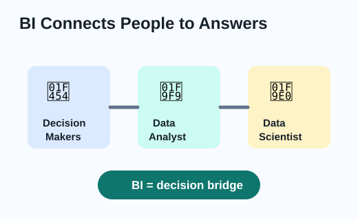
BI in Simple Terms
BI is like a translator. Raw data speaks in rows, columns, and files. BI turns that into charts and dashboards that managers can use to decide.
Simple example: Instead of reading 20,000 sales rows, a manager sees one dashboard showing sales, profit, top products, and warning areas.
👔 Decision MakersManagers, finance, HR, operations, and leaders who need clear answers before choosing an action.
🧹 Data AnalystCleans, connects, aggregates, and checks data so business questions can be answered correctly.
🧠 Data ScientistUses mining, machine learning, and models to predict outcomes or discover unknown insights.
🌉 BIThe bridge between raw data and business decisions.
😊Car Dashboard Analogy
Managers do not need raw engine signals. Like a driver, they need speed, fuel, warning lights, and direction.
🧪Shop Example
Instead of showing thousands of sales rows, a BI dashboard can show total sales, profit, monthly trend, top products, and city filters.
✅Takeaway
BI turns data into understandable information so people can decide faster and smarter.
📊Foundation
Data Visualization
💡Purpose
Data visualization converts numbers into charts, maps, and visual patterns that people can understand quickly.
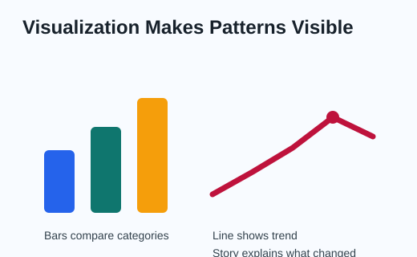
From Numbers to a Story
Data visualization means using graphical elements like bars, lines, maps, colors, and labels to show data clearly.
Simple example: A table says sales were 10K, 12K, 15K, then 9K. A line chart instantly shows the rise and sudden drop.
📊 Data VisualizationUsing graphical elements to show data so people can understand it faster.
📖 StorytellingBuilding a clear narrative from data: what happened, why it matters, and what action comes next.
🔁 PatternA repeated or meaningful behavior in the data, such as every December having higher sales.
📈 TrendDirection over time, such as sales going up, going down, or staying flat.
🧪Line Chart Example
A monthly sales table can hide a sudden drop. A line chart makes the drop visible immediately.
🧪Bar Chart Example
If you need to compare product categories, a sorted bar chart usually beats a decorative chart.
✅Takeaway
A good chart does not just look nice. It makes the answer obvious.
⚖️Foundation
Excel vs BI Tools
⚖️Comparison
Excel is great for small manual work. BI tools are better when reporting must be automated, secure, centralized, refreshed, and interactive.
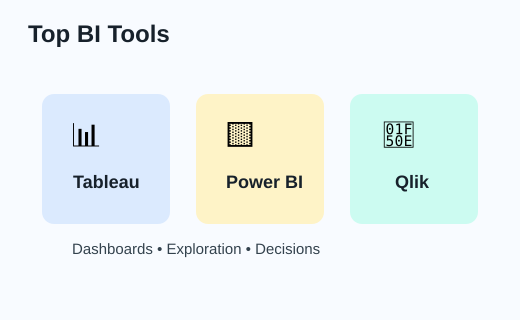
Top 3 BI Tools
Common BI tools in the market are Tableau, Power BI, and Qlik. All can create business dashboards and visual analysis, but each has different strengths.
Simple example: They are like different cars. All can take you to the destination, but the controls, ecosystem, cost, and driving feel are different.
TableauStrong in visual analytics and interactive exploration.
Power BIStrong in the Microsoft ecosystem and enterprise adoption.
QlikKnown for associative data modeling and exploration.
🤖 AutomationAutomatic refresh or update of data and reports.
🏋️ CapacityWhether the tool can handle large data volume and many users.
🔐 SecurityControl over who can see data, dashboards, and reports.
🧾 Row-Level SecurityEach user only sees the rows allowed for their role.
✅ Single Source of TruthOne trusted report or dashboard instead of many conflicting spreadsheet versions.
⚠️Spreadsheet Trap
Files named final, final_v2, and final_REAL create confusion. A Tableau dashboard can become the single trusted version.
🧪Team Example
Instead of emailing a new spreadsheet every morning, publish one dashboard and refresh it on a schedule.
✅Takeaway
Use Excel for quick analysis; use Tableau for scalable business reporting.
🧰Tableau Ecosystem
Tableau Products
🧰Development Tools
Tableau Desktop is the professional authoring tool. Tableau Public is free for public work. Tableau Prep is used to clean and prepare data.
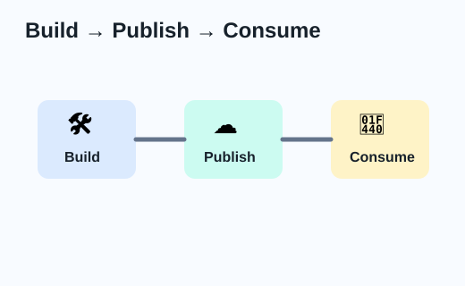
Why Tableau?
Tableau is strong when the work is exploratory: click, filter, drill down, and search for insight. Think of it like a microscope for business data.
Practical sample: An analyst builds a sales dashboard in Tableau Desktop, publishes it to Tableau Server or Cloud, then managers open it in a browser or mobile app.
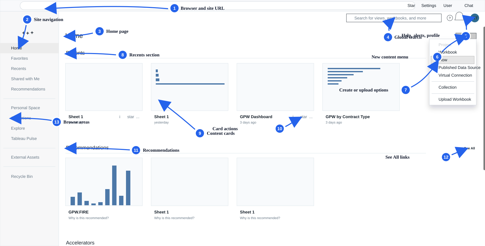
Annotated Tableau Cloud Home Tour
This image shows the Tableau Cloud or Tableau Server web home page. It is where users search for content, open recent workbooks, view recommendations, browse site areas, and create or upload new Tableau content.
Use the modal tour to move through the numbered pointers one by one. Each step explains what the area is, what it is used for, and where it appears in a real Tableau sharing workflow.
13 guided steps with Next
📘Textbook Review: Tableau Cloud Home Page
The Tableau Cloud or Tableau Server home page is the browser-based workspace for consuming, managing, and sharing Tableau content. Unlike Tableau Desktop, which is mainly for building worksheets and dashboards, this page is mainly for finding published content, opening workbooks, managing personal and shared items, creating new content, and navigating the Tableau site.
Home and NavigationThe left navigation lets users move between Home, Favorites, Recents, Shared with Me, Recommendations, Personal Space, Collections, Explore, Tableau Pulse, External Assets, and Recycle Bin. It helps users browse content based on ownership, usage, sharing, and discovery.
SearchThe global search box finds views, workbooks, data sources, projects, and other Tableau content. In large organizations, search is one of the fastest ways to locate a dashboard without manually browsing folders.
RecentsThe Recents section shows workbooks, views, or dashboards opened recently. It is useful for returning quickly to active analysis without remembering the project location.
RecommendationsRecommendations suggest content that Tableau thinks may be useful based on site activity, relevance, and usage patterns. This supports discovery of dashboards that may matter to the user.
New MenuThe New menu is used to create or upload content such as a workbook, flow, published data source, virtual connection, collection, or uploaded workbook. Available choices depend on the user's license and permissions.
Content CardsEach card represents a view, workbook, or dashboard. Cards usually include a preview image, title, date, and quick actions such as information, favorite, or more options.
🧪How This Page Is Used
Example workflow: a manager logs in to Tableau Cloud, searches for a sales dashboard, opens a recent workbook, favorites it for easy access, checks recommended dashboards, and uses the New menu only if they have permission to create or upload content.
🧠Memory Guide
Desktop = build dashboards. Cloud or Server Home = find, view, share, manage, create, and organize published Tableau content.
🖥️ Tableau DesktopPaid full authoring tool for professional private Tableau development.
🌍 Tableau Public DesktopFree authoring tool for learning or public portfolio work, but published work can be public.
🧽 Tableau PrepUsed to clean, transform, and prepare data before analysis.
☁️ Sharing ProductsServer, Cloud, Public, Reader, and Mobile help people view or interact with dashboards.
🖥️Sharing Tools
Tableau Server, Tableau Cloud, Tableau Public, Tableau Reader, and Tableau Mobile are used to share or view dashboards.
🧭Decision Guide
Use Tableau Desktop for private professional work, Tableau Public for learning or portfolios, and Tableau Prep when the main task is data preparation.
✅Takeaway
Choose the Tableau product based on privacy, audience, refresh needs, data source, and management responsibility.
🏗️Tableau Ecosystem
Tableau Architecture
💡Live vs Extract
A live connection queries the source directly. An extract stores an optimized copy for faster performance and scheduled refresh.
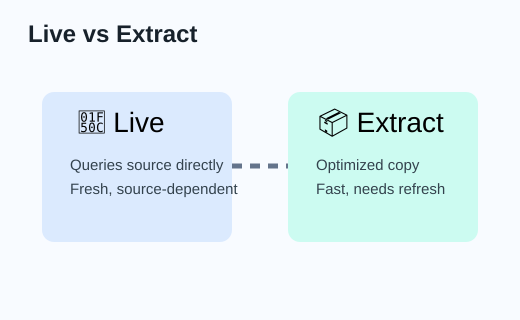
Freshness vs Speed
This is one of the most practical Tableau decisions. If you choose poorly, the dashboard can become slow or the numbers can become outdated.
Simple rule: Live favors fresh data. Extract favors speed, stability, and portability.
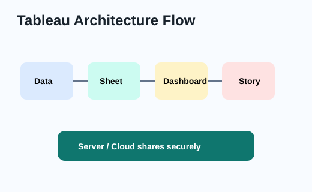
Architecture in Plain English
Tableau Desktop moves from data source, to worksheet, to dashboard, to story. Tableau Server or Cloud lets many users securely view, refresh, and interact with dashboards.
Server example: A user opens a dashboard, Tableau checks login and permissions, runs the needed queries, renders the view, and sends it back to the browser.
🏢 On-PremisesYour organization manages hardware, software, security, updates, and operations.
☁️ IaaSA cloud provider owns the hardware, but your team still manages Tableau Server software.
🧱 Key Server PartsGateway, Application Server, VizQL, Data Server, Repository, File Store, Cache Server, and Backgrounder work together.
📌File Types
.twb is a workbook. .twbx is a packaged workbook. .tds is a data source. .tdsx is a packaged data source. .hyper is an extract.
🧩Server Components
Gateway, Application Server, VizQL Server, Data Server, Repository, File Store, Cache Server, and Backgrounder work together to serve dashboards.
🧠Memory Hook
Live = asks the source. Extract = Tableau has its own optimized copy.
🖥️Setup
Preparing the Environment
💡Learning Setup
For learning, Tableau Public is enough because it is free and includes many authoring features.
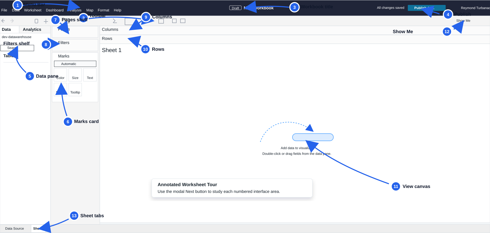
Annotated Tableau Worksheet Tour
This image shows the main areas of a Tableau worksheet: the menu bar, toolbar, data pane, shelves, Marks card, canvas, Show Me, publishing controls, and sheet tabs.
Use the modal tour to move through the numbered pointers one by one. Each step explains what the area is, what it is used for, and where it appears in real Tableau work.
13 guided steps with Next
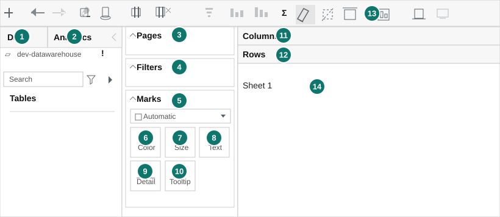
Worksheet Controls Tour
This focused image explains the controls used while building a Tableau worksheet: Data, Analytics, Pages, Filters, Marks, Color, Size, Text, Detail, Tooltip, Columns, Rows, the toolbar icons, and the worksheet canvas.
Use the modal tour to understand what each area is for, when to use it, and how it helps build a chart from raw fields.
14 guided steps with examples
📘Textbook Review: Tableau Worksheet Page
The worksheet page is the main authoring workspace in Tableau. It is where raw fields from a data source become charts, maps, tables, and visual analysis. A worksheet usually starts blank, then you build the view by dragging fields into shelves and controlling the appearance with the Marks card.
Data PaneThe left panel lists the connected data source, tables, dimensions, and measures. Analysts use it to find fields such as Sales, Profit, Category, Region, Customer Name, and Order Date.
Rows and ColumnsThese shelves define the structure of the view. Columns usually control the horizontal layout, while Rows usually control the vertical layout. For example, Category on Rows and Sales on Columns creates a bar chart.
Marks CardThe Marks card controls how the data marks look and behave. It manages mark type, color, size, labels, level of detail, and tooltips.
Filters and PagesFilters control which records appear in the view. Pages split a view into page-by-page slices, often used for time-based walkthroughs such as year-by-year analysis.
View CanvasThe large blank area in the center is where the visualization appears. It is the place where you inspect whether the chart answers the business question clearly.
Show MeShow Me suggests chart types based on selected fields. It is helpful for beginners, but the final chart choice should still depend on the question being answered.
🧪How the Parts Work Together
Example workflow: select fields in the Data pane, drag Category to Rows and Sales to Columns, add Profit to Color on the Marks card, apply a Year filter, review the chart on the canvas, then publish or place the worksheet into a dashboard.
🧠Memory Guide
Data pane = fields. Rows and Columns = chart structure. Marks card = appearance and detail. Filters = visible records. Canvas = final view. Show Me = chart suggestions. Sheet tabs = workbook navigation.
⚠️Privacy Warning
Do not publish private company, customer, or confidential data to Tableau Public.
🧪Dataset Example
Practice datasets often include Orders, Customers, Products, and Locations connected by key fields such as Customer ID or Product ID.
✅Takeaway
Learn the interface: data source page for data, worksheet for one chart, dashboard for layout, and Marks card for visual details.
🔗Data Modeling
Combining Data
💡Foundation
Good data modeling prevents wrong numbers. A beautiful dashboard with wrong data is still dangerous.
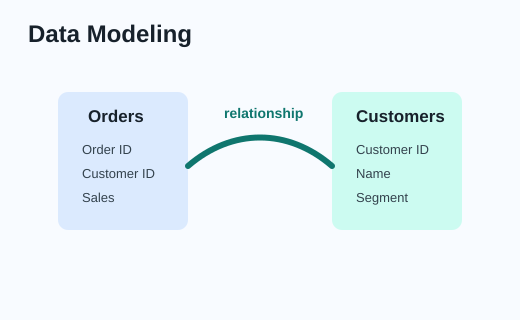
Data Modeling in Simple Terms
Data modeling is organizing tables and defining how they relate. It is the backbone of the dashboard because it decides how rows connect and how totals are calculated.
Simple example: Orders connect to Customers by Customer ID. If that relationship is wrong, sales by customer may duplicate or disappear.
📌Core Methods
Relationships connect logical tables flexibly. Joins merge columns side by side. Unions stack rows. Data blending combines different data sources at worksheet level.
⚠️Join Risk
Wrong joins can duplicate or remove rows, which can make sales, profit, counts, and averages incorrect.
🧠Memory Hook
Join adds columns. Union adds rows. Relationship keeps tables separate until Tableau queries them.
Use union for similar monthly or yearly files.
Use relationships for different entities in one model.
Use joins when you truly need physical merging.
Use blending when sources cannot be combined normally.
🏷️Data Modeling
Tableau Metadata
💡Metadata Meaning
Metadata describes fields: name, data type, geographic role, default aggregation, and whether a field is a dimension or measure.
😊Dimensions and Measures
Dimensions answer 'by what?' Measures answer 'how much?' Example: Sales by Category uses Category as dimension and Sales as measure.
⚠️Data Type Warning
Keys used in relationships or joins must have matching data types. Customer ID as text will not cleanly match Customer ID as number.
🧠Memory Hook
Discrete fields create headers or categories. Continuous fields create axes or ranges.
✏️Data Modeling
Renaming and Aliases
💡Why It Matters
Clear names make a workbook easier to understand, maintain, and hand off to another person.
🌟Best Practice
Use business-friendly names. Avoid names like Calc 1 when a clear name is possible.
🧪Example
Rename Cust_ID to Customer ID. Use aliases to show DE as Germany or US as United States.
✅Takeaway
Rename fields for readability. Use aliases for values inside a field.
🗂️Analysis Tools
Organizing Data
💡Purpose
Organizing data helps users move from big picture to detail and helps developers build cleaner analysis.
📌Tools
Hierarchies create drill-down paths. Groups manually combine members. Clusters automatically group marks based on patterns. Sets define dynamic or manual subsets.
🧪Example
A hierarchy can go from Country to State to City. A set can track Top 10 customers by sales.
✅Takeaway
Organized fields make dashboards easier to explore and maintain.
🔎Analysis Tools
Filtering and Sorting Data
💡Core Idea
Filters control what data enters the analysis and what users can explore.
📌Filter Types
Extract filters, data source filters, context filters, dimension filters, measure filters, table calculation filters, and user/security filters happen at different stages.
🧪Example
A relative date filter can always show the last 30 days without editing the dashboard every day.
⚠️Order Matters
Filters do not all happen at the same time. Tableau's order of operations can change results and performance.
🎛️Interactivity
Tableau Parameters
💡Simple Explanation
A parameter is like a dashboard knob. By itself it does nothing; it must be connected to a calculation, filter, reference line, title, or action.
🧪Threshold Example
Instead of hardcoding Profit < 10000 as red, create a Profit Threshold parameter so the user can choose the threshold.
🧪Measure Switch Example
Use a parameter to let users switch the chart between Sales, Profit, and Quantity.
✅Takeaway
Parameters make one view flexible enough to answer multiple requirements.
⚡Interactivity
Tableau Actions
💡Purpose
Actions make dashboards interactive. A user can click, hover, or select something and trigger a change.
📌Action Types
Filter action, highlight action, URL action, go-to-sheet action, set action, and parameter action.
🧪Example
Click a product category in a bar chart, and the sales trend chart filters to that category.
✅Takeaway
Actions turn static reports into guided exploration tools.
🧮Calculations
Tableau Calculations
💡Purpose
Calculations create custom fields for business logic, KPIs, labels, transformations, and advanced charts.
📌Calculation Types
Row-level calculations happen per row. Aggregate calculations happen after aggregation. Table calculations use the visible table. LOD expressions control the calculation level.
🧪Example
Profit Ratio = SUM([Profit]) / SUM([Sales]).
⚠️Common Mistake
Many calculation errors are not syntax errors. They happen because the calculation is being performed at the wrong level of detail.
Number functions: ROUND, CEILING, FLOOR, ABS.
String functions: LEFT, RIGHT, MID, SPLIT, TRIM.
Date functions: TODAY, DATEPART, DATETRUNC, DATEDIFF.
Null functions: ISNULL, IFNULL, ZN.
Logical functions: IF, CASE, AND, OR, NOT.
LOD expressions: FIXED, INCLUDE, EXCLUDE.
📈Visualization
Tableau Charts
💡Main Rule
Choose the chart based on the question, not because the chart looks fancy.
📊Chart Menu
Use bar charts for category comparison, line charts for trends, maps for geography, histograms or box plots for distribution, and scatter plots for relationships between two measures.
🧪Scenario Example
Question: Which category sells the most? Use a sorted bar chart. Question: Is profit rising over time? Use a line chart.
✅Takeaway
A simple chart that answers the question is better than a complex chart that confuses the user.
🧱Visualization
Tableau Dashboards
💡Dashboard Meaning
A dashboard is not a pile of charts. It is a designed decision-making interface.
Start with the purpose and user question. Keep spacing consistent. Put KPIs where users can see them quickly. Test the dashboard in viewer mode.
🧪Example
A sales dashboard may have KPI cards at the top, a monthly trend in the middle, product comparisons below, and filters on the side.
🚀Project
Tableau Project Workflow
💡Project Principle
Real Tableau work starts with requirements, not colors.
🔁Project Flow
Analyze requirements, choose charts, design a mockup, prepare the data source, build calculations, build charts, arrange containers, format, test, add interactivity, and deliver.
🧪Client Example
If the client asks for an executive dashboard, translate each requirement into a KPI, chart, filter, or navigation element.
BI supports decisions. Visualization turns data into visuals. Tableau builds worksheets, dashboards, and stories. Dimensions group data. Measures calculate numbers.
Do not publish private data to Tableau Public. Do not trust guessed data types without checking. Do not join tables without validating totals. Do not build dashboards before understanding requirements.
✅Takeaway
Good Tableau work combines data thinking, visual thinking, and project thinking.
🖼️Visual Guide
Sample Tableau Chart Images
Use these sample images as quick visual memory aids. Click any chart to open a larger view, then use left and right to move through the examples quickly.
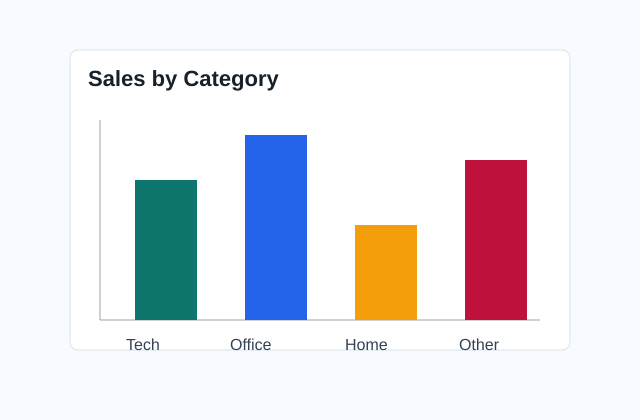
Bar Chart
Compare categories
Use when the question is: Which category is higher? Great for sales by category, profit by region, or count by status.
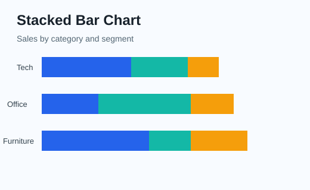
Stacked Bar Chart
Compare parts inside categories
Use when you need category totals plus composition, such as sales by category split by segment.
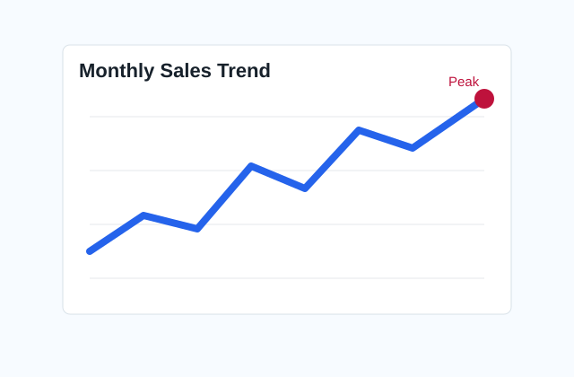
Line Chart
Show change over time
Use when the question is: How did it change month by month? Best for trends, seasonality, and growth.
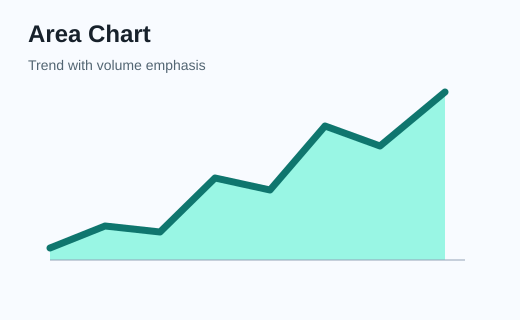
Area Chart
Show volume over time
Use when the size of the filled area helps show cumulative movement or changing contribution.
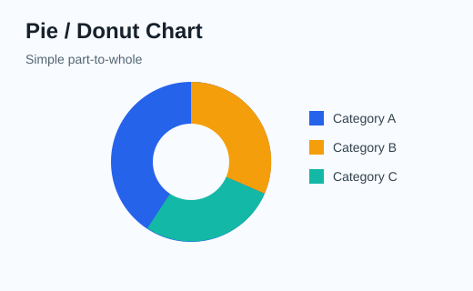
Pie or Donut Chart
Show simple part-to-whole
Use sparingly when there are only a few slices and the percentage story is easy to read.
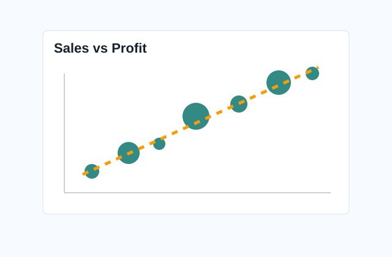
Scatter Plot
Compare two measures
Use when the question is: Are sales and profit related? Helpful for outliers, clusters, and relationships.
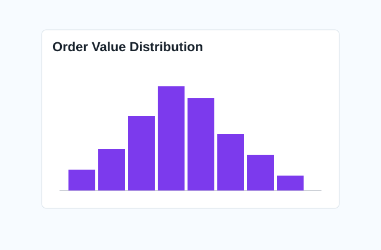
Histogram
Show distribution
Use when the question is: Where do most values fall? Great for order size, delivery time, and price ranges.
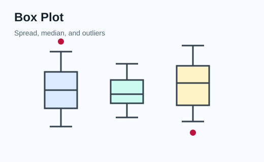
Box Plot
Compare spread and outliers
Use when you need median, range, and outlier patterns across categories.
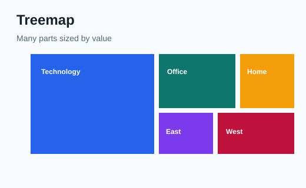
Treemap
Show many parts of a total
Use when you need a compact view of many categories sized by a measure.
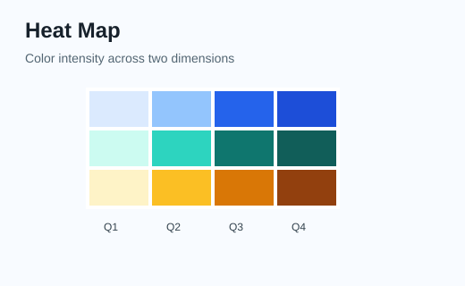
Heat Map or Highlight Table
Spot intensity patterns
Use color intensity to compare values across two dimensions, like month by category.
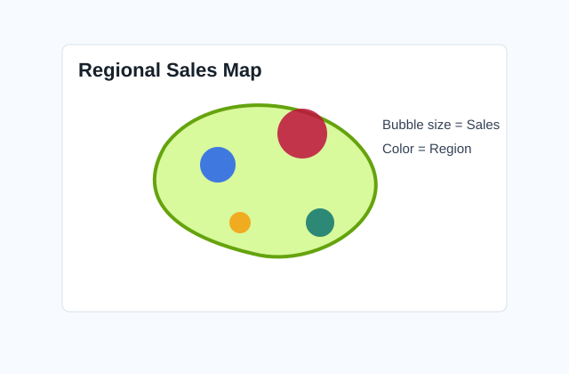
Filled Map
Analyze geographic areas
Use when region, state, province, or country performance matters to the question.
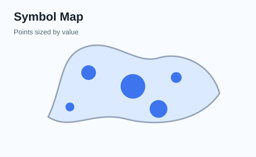
Symbol Map
Show points on a map
Use when each city, store, customer site, or location needs its own mark.
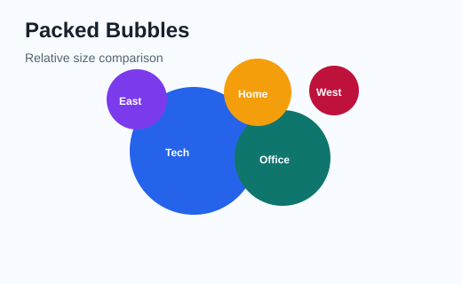
Packed Bubbles
Show playful relative size
Use for quick visual comparison, but avoid it when precise ranking matters.
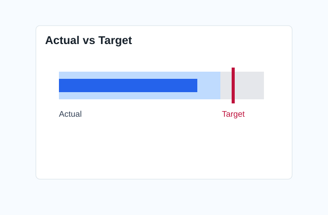
Bullet Chart
Compare actual vs target
Use when the question is: Are we meeting the goal? Better than gauges for compact KPI tracking.
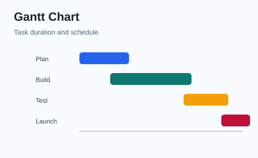
Gantt Chart
Show duration and schedule
Use for projects, tasks, lead time, shipping windows, or process timelines.
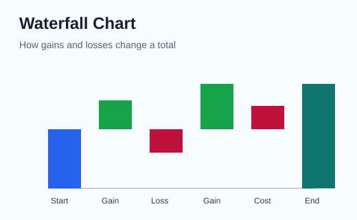
Waterfall Chart
Explain positive and negative changes
Use when you need to show how starting value becomes ending value through gains and losses.
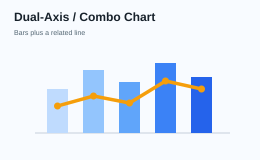
Dual-Axis or Combo Chart
Compare related measures carefully
Use for two related measures like sales bars with profit-rate line. Label clearly to avoid confusion.
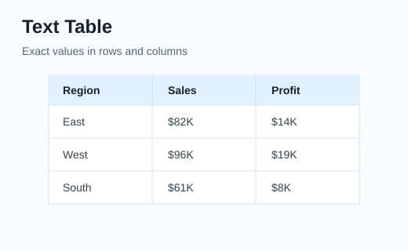
Text Table
Show exact values
Use when users must read precise numbers. Keep it clean and avoid turning every dashboard into a spreadsheet.
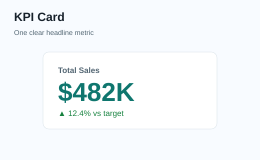
KPI Card
Show one important number
Use for headline metrics like Sales, Profit, Orders, Target Attainment, or Customer Satisfaction.
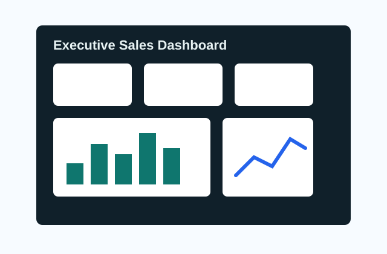
Dashboard Layout
Combine views for decisions
Use when users need KPIs, trends, filters, and details together in one decision-ready screen.
🧩Tableau Screen Gallery
Tableau Screen Examples in Simple Terms
These are the exact Tableau screenshots from the examples. Click any card to open a larger modal view, then use Next and Previous to study each chart or Tableau screen step by step.
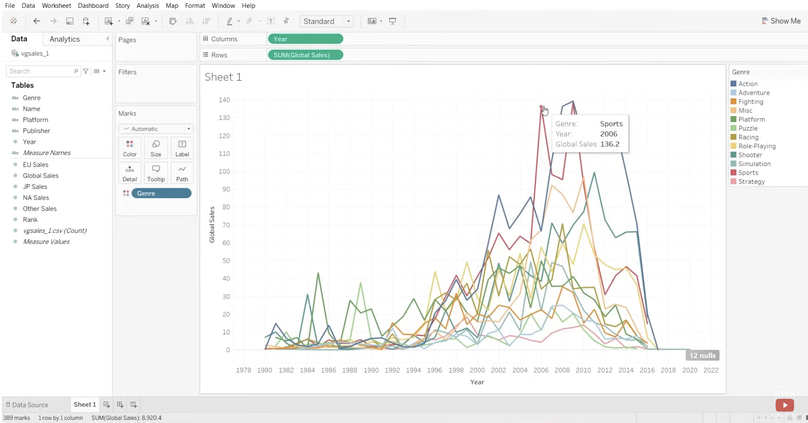
Multi-Line Trend Chart by Genre
Charts / marks used: line marks, Year on Columns, SUM(Global Sales) on Rows, Genre on Color, Tooltip enabled.
This view uses a line chart to show how global sales changed across years for each game genre. Each colored line represents one genre, such as Sports, Action, Shooter, or Role-Playing.
In simple terms, this is like tracking several racers over time. When a line goes up, that genre increased in sales. When it goes down, that genre declined. The tooltip appears when the user hovers over a point and shows the exact Genre, Year, and Global Sales value.
This chart is best when the question is about trends, peaks, drops, or comparison across time. It is useful for seeing which genres became popular, which ones declined, and which year had the strongest sales.
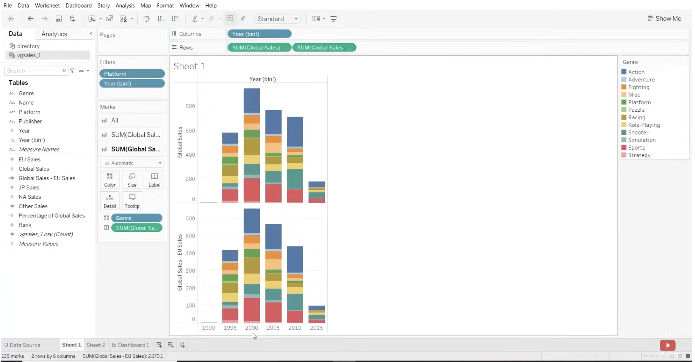
Stacked Bar Small Multiples
Charts / marks used: stacked bar marks, Year bin on Columns, two measures on Rows, Genre on Color, filters for Platform and Year bin.
This screen shows two stacked bar charts placed one above the other. The top chart shows SUM(Global Sales), while the lower chart shows a second measure, likely Global Sales minus EU Sales.
In simple terms, each bar is a total for a time group, and each color inside the bar is a genre contribution. The taller the bar, the larger the sales. The colored sections explain what makes up the total.
This view is useful when you want to compare totals and composition at the same time. It also demonstrates small multiples, because Tableau is showing related charts in separate rows so the viewer can compare measures without mixing them in one chart.
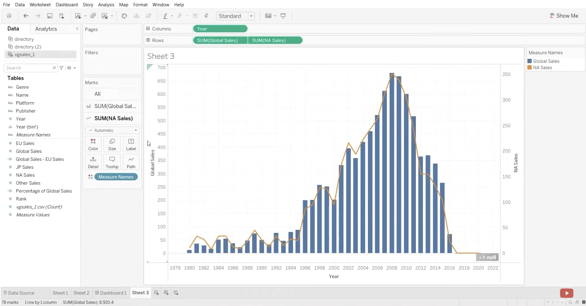
Dual-Axis Bar and Line Chart
Charts / marks used: bar marks for SUM(Global Sales), line marks for SUM(NA Sales), Year on Columns, dual axis with Measure Names legend.
This view combines two chart types in one worksheet. The blue bars show Global Sales by year, while the orange line shows NA Sales by year. The left axis belongs to Global Sales, and the right axis belongs to NA Sales.
In simple terms, the bars show the big worldwide total, and the line shows how one region follows or differs from that total. If both rise and fall together, North America is following the global pattern. If they separate, the region may be behaving differently.
This chart is useful when two related measures need to be compared over time. It should be used carefully because dual-axis charts can confuse viewers if the axes are not clearly labeled.
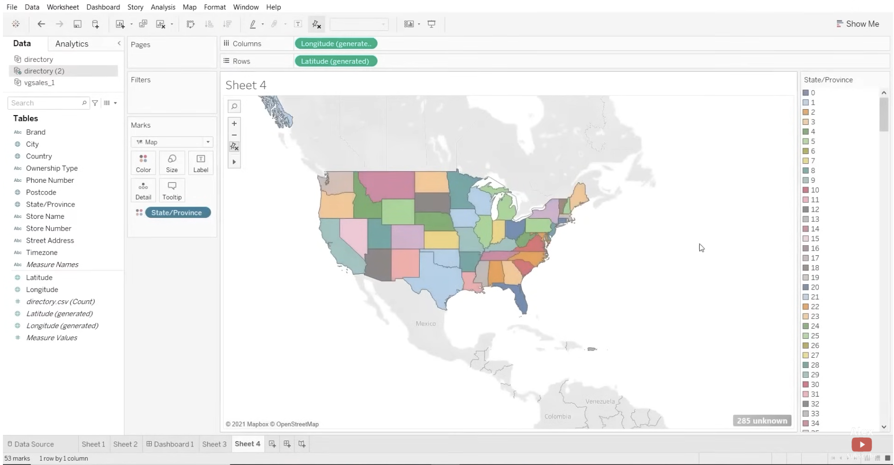
Filled Map by State or Province
Charts / marks used: map marks, generated Longitude on Columns, generated Latitude on Rows, State/Province on Color.
This screen shows a filled map of the United States. Tableau generated Latitude and Longitude automatically, then filled each state shape with a different color based on the State/Province field.
In simple terms, Tableau recognized geographic data and drew a map. Each state is a mark. Color is being used to separate states or categories, not necessarily to show higher or lower value.
This view is useful when the analysis depends on location. It can be improved by coloring states by a meaningful measure such as Sales, Profit, Population, or Store Count instead of using many random category colors.
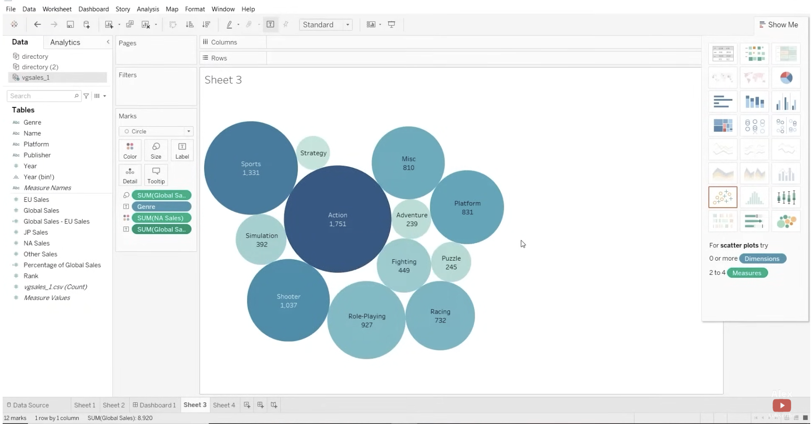
Packed Bubble Chart by Genre
Charts / marks used: circle marks, Genre on Label and Color, SUM(Global Sales) on Size, Show Me packed bubbles option.
This view uses circles to compare game genres by sales. Larger bubbles represent larger sales totals. For example, Action has the largest bubble, while Adventure and Strategy have smaller bubbles.
In simple terms, bigger circle means bigger number. The label inside each bubble tells the genre and the sales value. The color helps separate the bubbles visually.
Packed bubbles are good for a quick visual impression, but they are not the best chart for precise ranking. If exact comparison matters, a sorted bar chart is usually clearer.
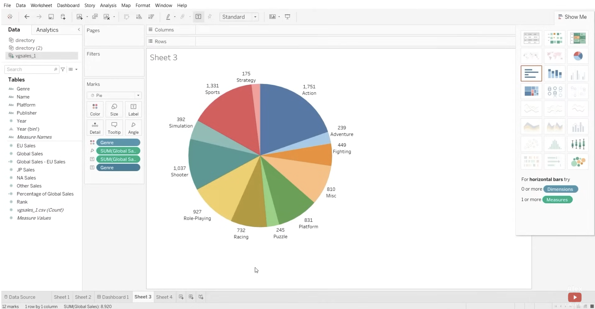
Pie Chart by Genre
Charts / marks used: pie marks, Genre on Color and Label, SUM(Global Sales) on Angle and Label.
This view shows how total global sales are divided across game genres. Each slice represents one genre, and the size of the slice depends on the sales value.
In simple terms, the whole pie is total sales. Every slice is one genre share of that total. Action, Sports, and Shooter have larger slices because they contribute more sales.
This chart is useful for simple part-to-whole explanation. However, because there are many slices, it can become hard to compare categories precisely. A bar chart may be easier if the goal is ranking genres from highest to lowest.
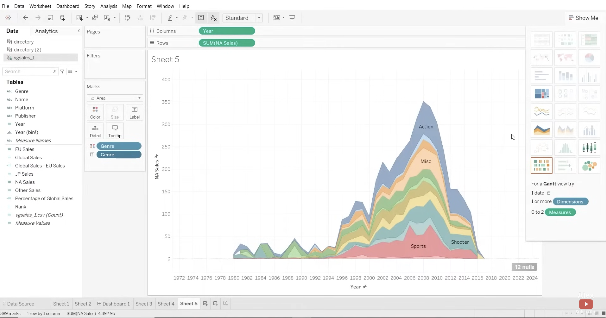
Stacked Area Chart for NA Sales
Charts / marks used: area marks, Year on Columns, SUM(NA Sales) on Rows, Genre on Color and Label.
This view shows North America sales over time, with colored layers for different genres. The total height of the stacked area shows total NA Sales, while each colored band shows how much each genre contributes.
In simple terms, it is like a mountain made of colored layers. The mountain gets taller when total sales increase. The thickness of each layer shows how important that genre was during that year.
This chart is useful for showing volume over time and composition over time. It is especially good for seeing a boom period, but it can be harder to read exact values compared with a line or bar chart.
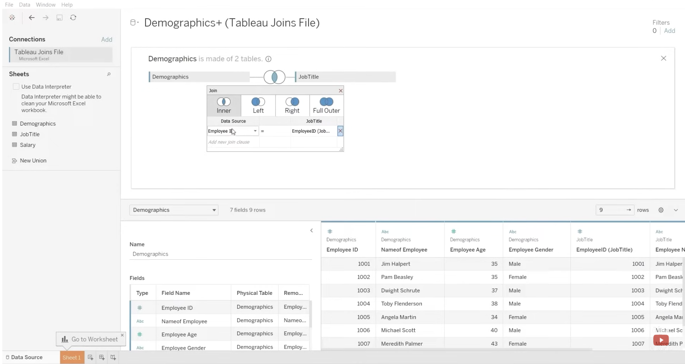
Data Source Inner Join Screen
Tableau feature used: physical join canvas, Inner Join selected, Employee ID join clause, data preview grid.
This screen is from the Tableau Data Source page. Two tables, Demographics and JobTitle, are joined together using Employee ID. The selected join type is Inner Join.
In simple terms, Tableau is matching rows from two tables where the Employee ID is the same. If an employee exists in both tables, the row appears in the result. If the ID exists in only one table, an inner join removes it from the joined result.
This screen is important because joins affect the numbers shown later in charts. A wrong join can duplicate rows, remove records, or create incorrect totals. Always inspect the preview grid and validate row counts after joining tables.
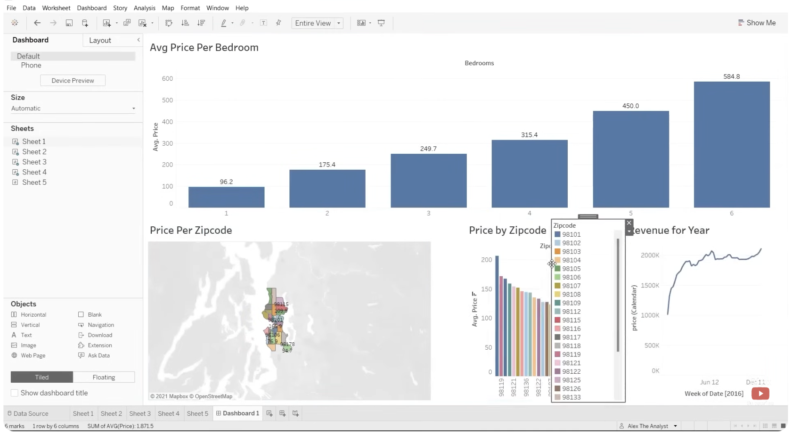
Real Estate Price Dashboard
Dashboard components used: bar chart, map, bar chart by zipcode, line chart, zipcode filter legend, tiled dashboard layout.
This screen shows a Tableau dashboard, not just one worksheet. It combines several views: average price per bedroom, price per zipcode map, price by zipcode bar chart, and revenue trend by year.
In simple terms, the dashboard is a control panel. The top bar chart answers how price changes by bedroom count. The map answers where prices are located. The zipcode bar chart compares locations. The line chart shows revenue movement over time.
This type of dashboard is useful because users can answer several related questions in one place. It also shows why layout matters: charts, filters, legends, and labels must be arranged clearly so the viewer understands the story quickly.
📁File Guide
Sample Tableau File Type Images
These visual file samples show what each Tableau file type usually contains. This is especially helpful for remembering why a .twbx is easier to share than a .twb.
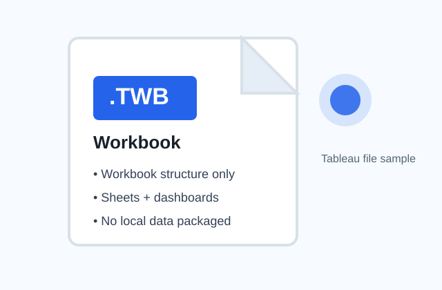
.twb Workbook
Workbook structure only
Contains sheets, dashboards, and connection instructions, but not local data files.
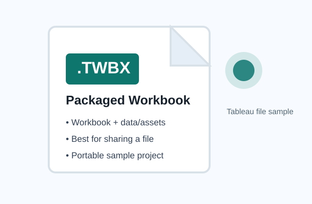
.twbx Packaged Workbook
Workbook plus packaged data/assets
Best when sending a sample project to someone because the needed local assets can travel with it.
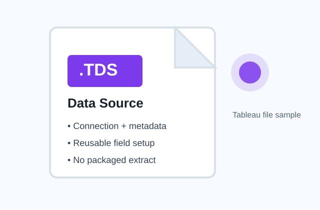
.tds Data Source
Connection and metadata
Stores reusable data source setup such as field names, default properties, and connection info.
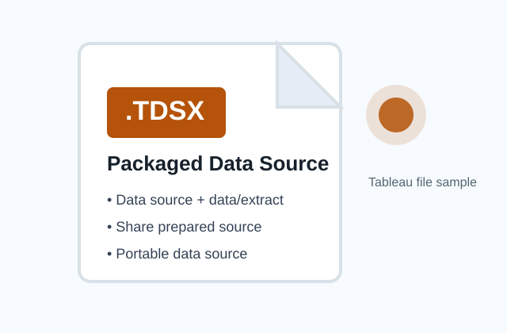
.tdsx Packaged Data Source
Data source plus packaged data
Useful when sharing a prepared data source with the supporting extract or local data.
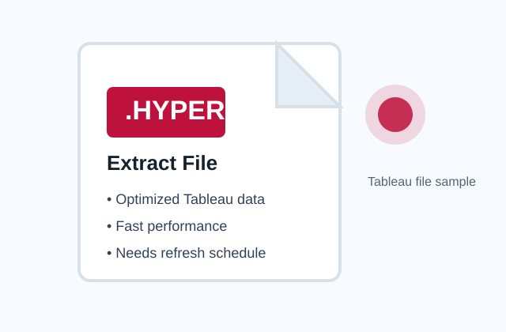
.hyper Extract
Optimized Tableau data
Designed for performance. It is fast, but it must be refreshed when fresh data is needed.
🧭Dashboard Guide
Sample Tableau Dashboard Examples
These 20 sample dashboard images show different real-world dashboard patterns. Each example lists the chart types used so every major Tableau chart has a dashboard use case.
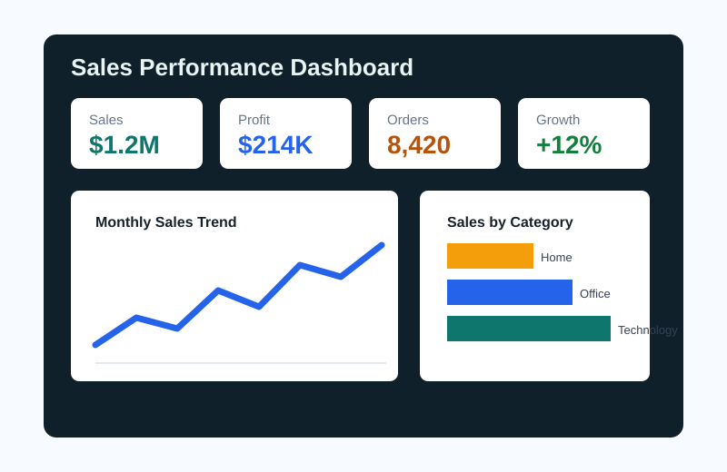
Sales Performance Dashboard
Uses KPI cards, line chart, bar chart, and filled map.
Best for sales teams and managers. The filled map shows regional performance, the line chart shows monthly movement, and bars compare product categories.
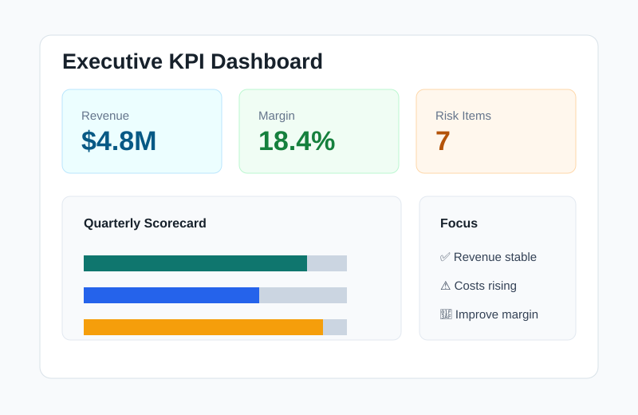
Executive KPI Dashboard
Uses KPI cards, bullet charts, line chart, and highlight table.
Best for leadership summaries. Bullet charts compare actual vs target, KPI cards show headline performance, and the highlight table quickly flags weak areas.
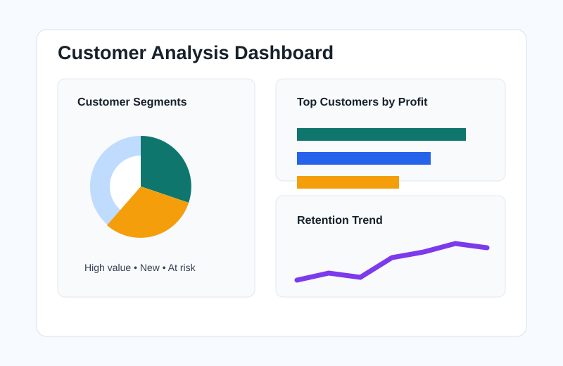
Customer Analysis Dashboard
Uses treemap, scatter plot, bar chart, and text table.
Best for marketing, CRM, and retention analysis. Scatter plots find high-value or risky customers, treemaps show customer value by segment, and text tables provide exact customer details.
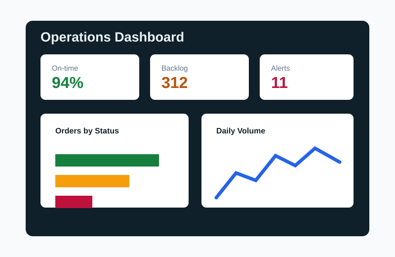
Operations Dashboard
Uses heat map, bar chart, line chart, and KPI cards.
Best for daily monitoring. The heat map reveals busy or risky periods, bars compare status counts, and the line chart shows whether backlog is rising or falling.
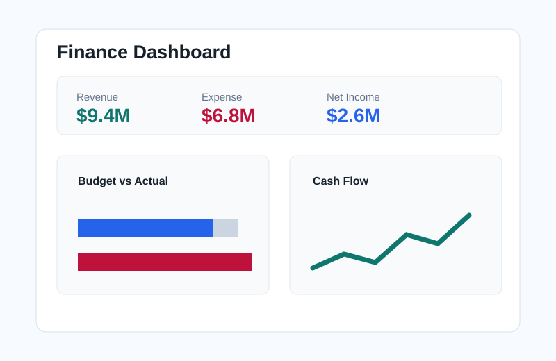
Finance Dashboard
Uses waterfall chart, combo chart, KPI cards, and text table.
Best for budget and financial review. The waterfall chart explains how revenue and expenses create net income, while the text table keeps exact numbers visible.
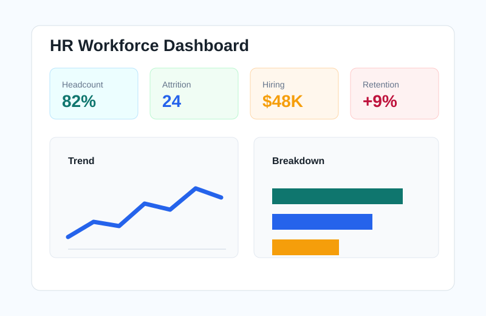
HR Workforce Dashboard
Uses stacked bar chart, line chart, packed bubbles, and KPI cards.
Best for people analytics. Packed bubbles show department size, stacked bars compare workforce groups, and the line chart shows attrition trend.
Marketing Campaign Dashboard
Uses funnel-style bars, line chart, pie/donut chart, and KPI cards.
Best for campaign performance. Bars show lead stages, the line chart tracks conversions, and the donut chart shows channel mix.
Inventory Dashboard
Uses bar chart, heat map, treemap, and KPI cards.
Best for supply and warehouse teams. Treemaps show inventory share by category, heat maps show stock pressure, and bars rank products by reorder risk.
Customer Support Dashboard
Uses KPI cards, line chart, stacked bar chart, and highlight table.
Best for service teams. It tracks tickets, SLA performance, backlog trend, and issue severity using a highlight table.
Project Tracking Dashboard
Uses Gantt chart, KPI cards, bar chart, and status text table.
Best for project managers. Gantt bars show timeline, KPI cards show completion and risk, and the text table lists exact task status.
Retail Store Dashboard
Uses filled map, bar chart, line chart, and KPI cards.
Best for store operations. The filled map compares regions, bars rank stores or products, and the line chart shows sales across time.
Logistics Delivery Dashboard
Uses symbol map, Gantt chart, heat map, and KPI cards.
Best for delivery and fleet tracking. Symbol maps show delivery points, Gantt bars show route timing, and heat maps reveal delay hotspots.
Product Portfolio Dashboard
Uses scatter plot, treemap, box plot, and KPI cards.
Best for product managers. Scatter plots compare margin vs sales, treemaps show portfolio size, and box plots reveal price or profit spread.
Quality Control Dashboard
Uses histogram, box plot, bar chart, and KPI cards.
Best for manufacturing or QA teams. The histogram shows defect distribution, box plots compare variation, and bars rank defect types.
Education Performance Dashboard
Uses heat map or highlight table, stacked bar chart, line chart, and text table.
Best for school or training analytics. Heat maps show performance by subject, stacked bars compare completion groups, and text tables keep exact scores visible.
Revenue Trend Area Dashboard
Uses area chart, line chart, KPI cards, and bar chart.
Best when the main question is about volume over time. The area chart emphasizes the size of revenue or demand, while the line chart makes the trend direction easy to follow.
Target Performance Dashboard
Uses bullet chart, waterfall chart, KPI cards, and text table.
Best for goal tracking. Bullet charts show actual vs target, the waterfall chart explains the gains and losses, and the text table shows exact target gaps.
Distribution and Outlier Dashboard
Uses histogram, box plot, scatter plot, and KPI cards.
Best for understanding spread and unusual values. The histogram shows where most values fall, the box plot compares variation, and the scatter plot helps reveal outliers.
Geographic Performance Dashboard
Uses filled map, symbol map, bar chart, and KPI cards.
Best when location matters. The filled map compares regions, the symbol map shows exact city or branch points, and the bar chart ranks the strongest locations.
Segment Composition Dashboard
Uses treemap, packed bubbles, heat map or highlight table, and text table.
Best for comparing many segments. Treemaps show part-to-whole, packed bubbles give a quick size comparison, heat maps show intensity, and text tables keep exact values available.
🧭Interactive Guide
Chart Picker Tool
Use this quick guide when you are unsure which Tableau chart fits the question. Choose what you want to show, then the app recommends a chart type and gives a simple example.
What do you want to show?
📊
Bar Chart
Best when you need to compare categories side by side. It is easy to scan, easy to rank, and very beginner-friendly.
Example: Compare sales by product category to see which category performs best.
Tableau tip: Put the category on Rows and the measure on Columns.
✅Dashboard Quality
Dashboard Design Checklist
Use this checklist before you publish or present a Tableau dashboard. A good dashboard should be easy to read, focused on decisions, and trustworthy.
📝
Clear title
The title should tell users what the dashboard is about, such as Sales Performance by Region.
🔢
KPI row
Place the most important numbers at the top so users can understand the status quickly.
🎛️
Useful filters
Add filters that help users answer real questions, like Date, Region, Segment, or Category.
🎨
Consistent colors
Use the same colors for the same meanings. Do not change color rules from chart to chart.
🏷️
Readable labels
Labels should be large enough, clear enough, and placed only where they help understanding.
🧹
No chart clutter
Remove extra gridlines, repeated labels, unnecessary legends, and decorations that do not help the question.
🧮
Tested calculations
Check totals, filters, calculated fields, and dashboard actions before sharing with others.
👀
Quick scan test
A viewer should understand the main message in a few seconds before exploring the details.
🛠️Hands-on Practice
Mini Project Section
Use these prompts to practice building real Tableau dashboards. Each mini project tells you what to build, what charts to include, and what the final dashboard should answer.
Beginner Project
📊 Sales Dashboard
Build a Sales Dashboard using KPI cards, line chart, bar chart, map, and filters.
KPI cards: Total Sales, Profit, Orders, Profit Ratio
Line chart: Sales trend by month
Bar chart: Sales by category or region
Map: Sales or profit by location
Filters: Date, Region, Category, Segment
Goal: Help a manager see what is selling well, where performance is strong, and what needs attention.
Design Practice
🎯 Target Performance Dashboard
Build a dashboard that compares actual performance against target.
Bullet chart: Actual sales vs target
KPI cards: Target achievement, gap, best performer
Bar chart: Target gap by team
Highlight table: Teams that are above or below goal
Goal: Make it easy to see who is meeting the target and who needs support.
Analysis Practice
📦 Distribution Dashboard
Build a dashboard that explains spread, outliers, and common value ranges.
Histogram: Order value distribution
Box plot: Profit spread by category
Scatter plot: Sales vs profit
Filters: Category, Segment, Region
Goal: Find unusual orders, high-risk categories, and typical performance patterns.
Map Practice
🗺️ Geographic Performance Dashboard
Build a dashboard focused on location-based insights.
Filled map: Profit by state or region
Symbol map: Store or city performance
Bar chart: Top and bottom locations
Filters: Date, Region, Product Category
Goal: Help users identify strong locations, weak locations, and possible expansion areas.
🎮Mini Game
Build-a-Dashboard Challenge
Read the mission, choose the dashboard components that fit, then submit your build. The game checks your selections and explains what belongs in the dashboard.
Mission 1
Sales Manager Dashboard
Build a dashboard that helps a sales manager monitor performance by time, product category, and location.
Need: Choose the best components for this dashboard.
1 / 5mission
0score
5needed
Pick dashboard components
🕵️Insight Game
Data Detective
Study the dashboard clues, then choose the best business insight. This trains users to move from chart reading to decision-making.
Case 1
Regional Profit Mystery
A dashboard shows low profit in the West region, while the return-rate bar chart is highest for that same region.
1 / 5case
0score
Readystatus
What insight can you conclude?
🎯Practice
Quiz Score Mode
Start a scored multiple-choice session using questions from the 100-item practice quiz. Choose an answer and the app will check it automatically.
0current item
0correct
0wrong
0%score
Click Start to begin.
🃏Memory
Flashcards
Click the card to flip between term and explanation. Use this for fast memorization before taking the quiz.
1 / 1
Term
Business Intelligence
Click Flip to show the explanation.
❓Practice
Practice Quiz
Click each question to reveal the answer. There are more questions now, so you can practice in smaller review sessions.
Answer: Business Intelligence: using data analysis and reporting to support better decisions.
Answer: Raw data is unprocessed; insight is meaningful understanding or an actionable finding from data.
Answer: Volume, Velocity, and Variety.
Answer: When you need automation, large data handling, security, centralized sharing, and interactive dashboards.
Answer: Desktop is the professional/private authoring tool; Public is free and intended for public publishing or learning.
Answer: Live queries the source directly; extract uses an optimized copy that must be refreshed.
Answer: A packaged workbook that includes the workbook plus data/assets.
Answer: It converts user interactions into queries and renders visualizations.
Answer: The logical layer uses relationships; the physical layer uses joins/unions and can physically merge tables.
Answer: Join adds columns side by side; union stacks rows vertically.
Answer: They are flexible and reduce the risk of duplicated or lost data compared with joins.
Answer: When combining different data sources at the worksheet or visualization level.
Answer: A grouping/category field such as Category, Country, or Customer Name.
Answer: A numeric field used for calculation, such as Sales, Profit, or Quantity.